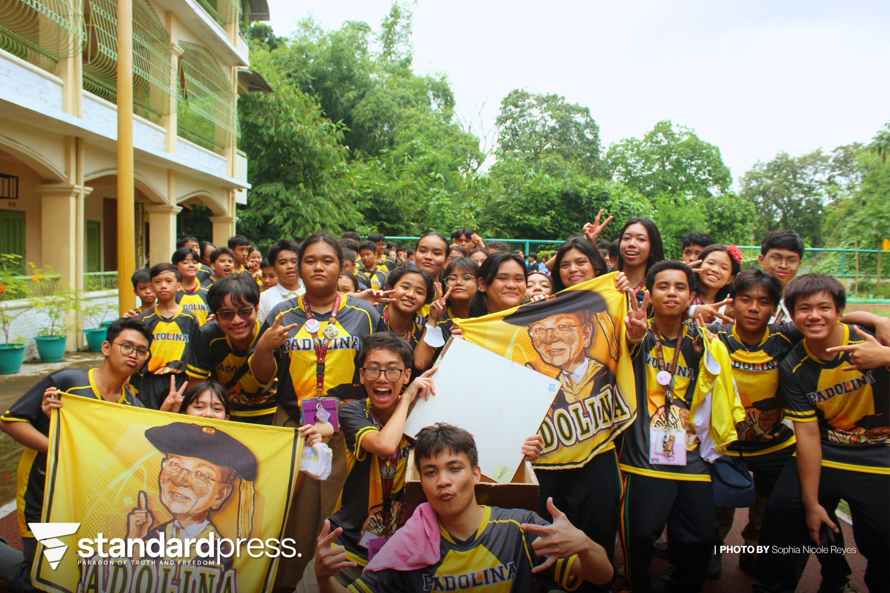

The intramurals is an event celebrated by most of the schools here in the Philippines, where we are able to showcase our own skills, talents, and values in the different areas of sport. First and foremost, I learned that in many cases, teamwork is the key to winning or success. This is applicable for most of the sports like volleyball, basketball, table tennis, and etc, without it, achieving the title “Champion” will be very hard for your team. In addition to this, I also learned that sportsmanship is a must. Despite the fact of winning, if you do not inhabit this value, your title will be a waste. We must always remember that whether we win or lose, we must always respect each and everyone’s performance, hard work, and dedication. And lastly, I learned that losing is a part of your journey. Though we may think that it only symbolizes weakness, it is actually evidence that you fought and did not back down. It will help you grow, improve, and develop in whatever sport that you are aspiring to. Overall, this event, the Intramurals, taught me many things, not only in the category of sports and physicality, but also in my perspectives and values.
This event has left me so many things which I can bring and cherish for the rest of my life. The ability to work with so many people is very hard to achieve, but we must always remember that 2 is better than 1. In life, we will meet different kinds of people, in our jobs, colleges, and simply in the streets. The capability to work with them as a team will help you and your teammates to achieve the goal that you are trying to reach. Along with this is the values which we must show and embody, like sportsmanship and kindness, in some point in our life, we will lose, we will not always be on the top, but, it’s okay, because what really matters is who you bring along the journey, the ones that you meet and get along with until the end, making memories and dreams which you can all reach together. Finally, the ability to handle losing or being down. This is not only applicable in sports, but also in my academics. I may not always understand the lessons or achieve high grades, but I know for myself that it’s okay, I tried my best, and it will be part of my journey until I become the person that I want to be.
Yes, I actively participated in this event. This event gave me the opportunity to enhance my abilities and talents in the sports that I play. I joined the volleyball boys and table tennis. Although I was supposed to join the 4x100m dash, I was unable to, since the day of the 4x100m dash and table tennis were the same. That’s why I needed to find someone who would be able to substitute me in one of these sports, and I found Laurenz, who was able to replace me in the 4x100m dash. Though I felt conscious since I only placed 4th, I believe that it is a sign for improvement and growth. In addition to this, we actively participated in supporting our team, Yellow Padolina, especially in chanting, this will not only serve as a chant but also as a motivation for our players to do their best. And in the end, our team placed 1st in the overall champion, showing that teamwork always makes the dream work.
If I were to teach this topic to a classmate I will simply explain it like it is a tire rolling down a hill. In life, we will not always be on the top. Just like a tire rolling down a hill, it will always change its position from the top to the bottom, symbolizing that we may lose and win life, but we must not think of it negatively, we must take it as a sign to improve, develop, and grow as a person just like in sports. There will be bumps in this hill just like our hardships and challenges, but through dedication and teamwork, I firmly believe that you will continue your journey smoothly and consistently. And on the end of that hill, is where you will reach your goals and objectives, because I believe that there will always be something tasty and good after a day of maximum hardwork and perseverance.
This event, mainly handled by the MAPEH club and MAPEH teachers, is very significant for us students, giving us the opportunity to show our beloved skills and talents. It is the time where we are able to coordinate with other classmates, schoolmates, and etc. It is the foundation for improvement, coordination, and teamwork. It will serve as a medium for the students to grow each year together with different kinds of people. Without this event, we students may not firmly know the meaning and importance of sportsmanship and teamwork in order to reach success.
PLAY THIS WHILE SCROLLING FOR BETTER EXPERIENCE!!